Votre accueil Google TV, sans publicité : un launcher alternatif pour vos applis, l'heure et la météo. Vous pouvez aussi y ajouter votre propre bibliothèque de films et séries, présentée en affiches et lue par un lecteur intégré, basé sur le moteur VLC. Your Google TV home screen, without ads: an alternative launcher for your apps, the time and the weather. You can also add your own library of films and series, shown as posters and played by a built-in player based on the VLC engine.
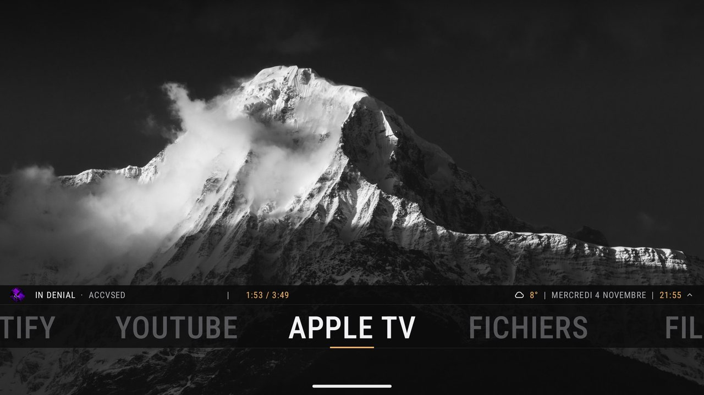
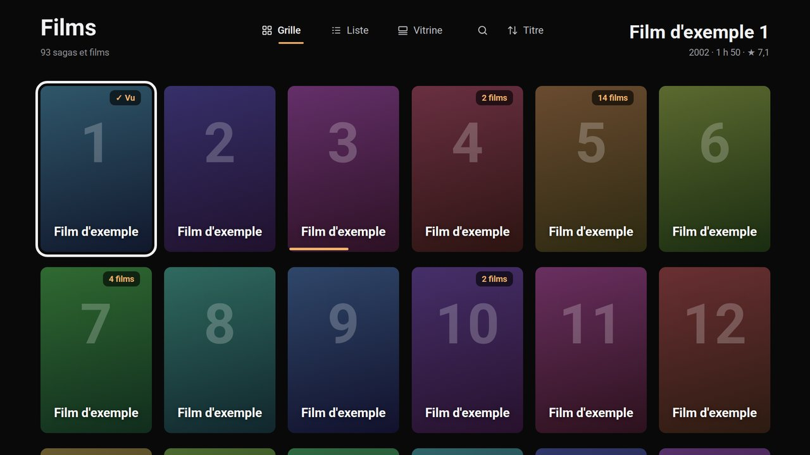
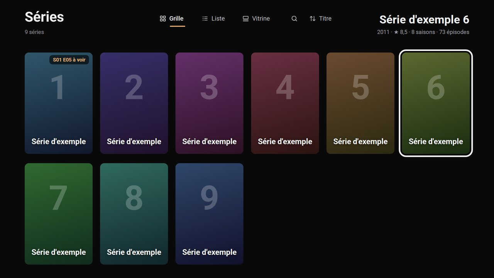
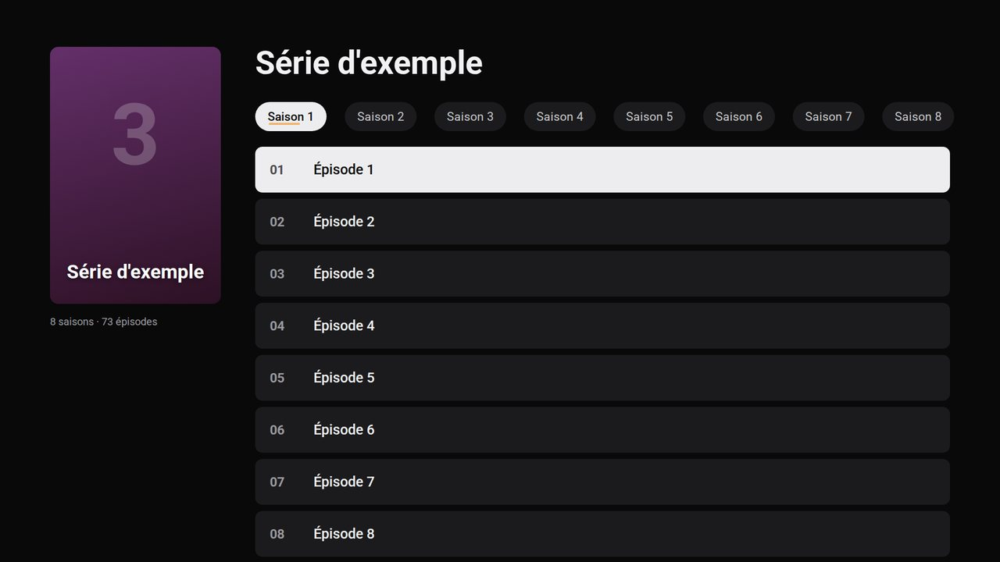
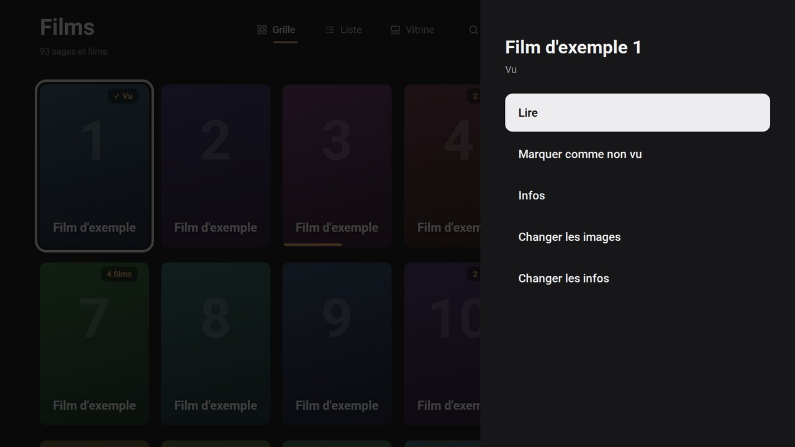
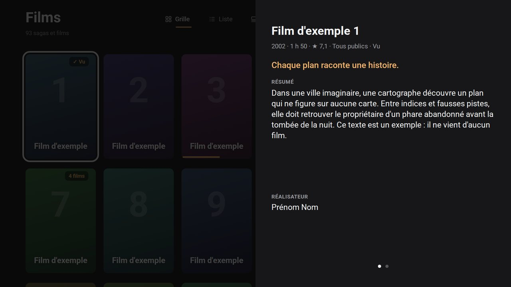
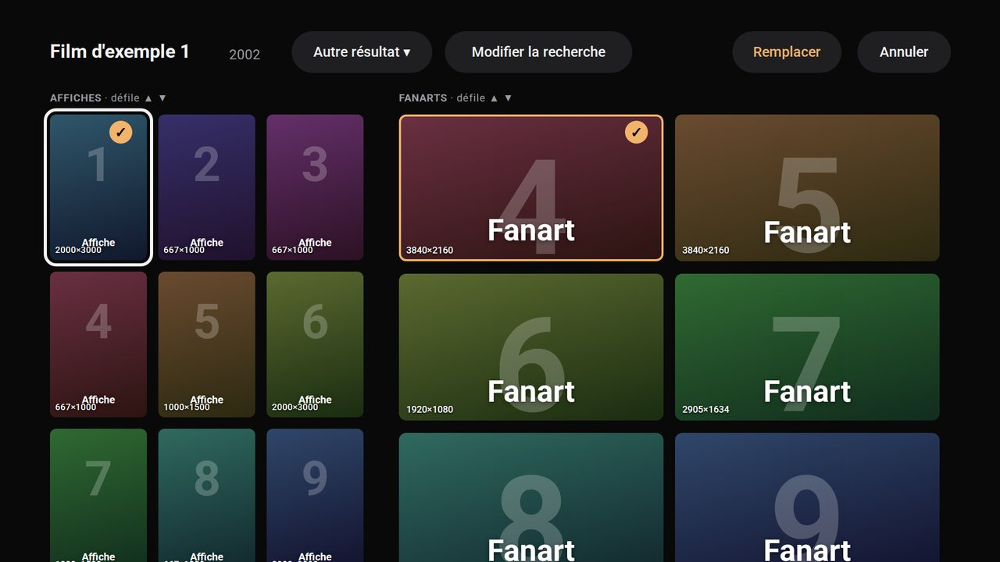
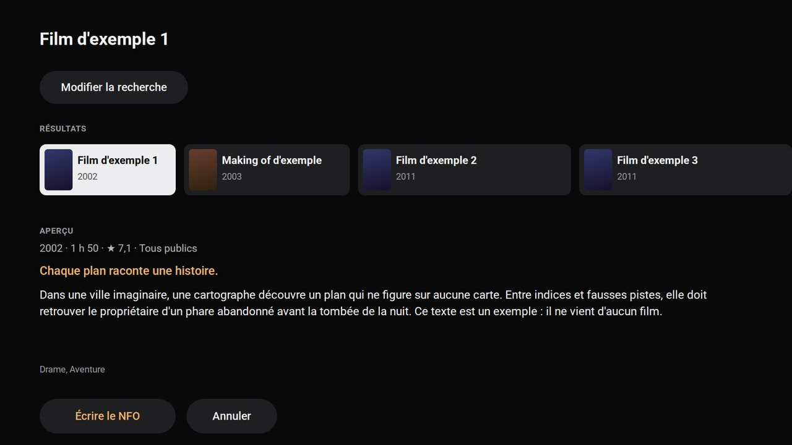
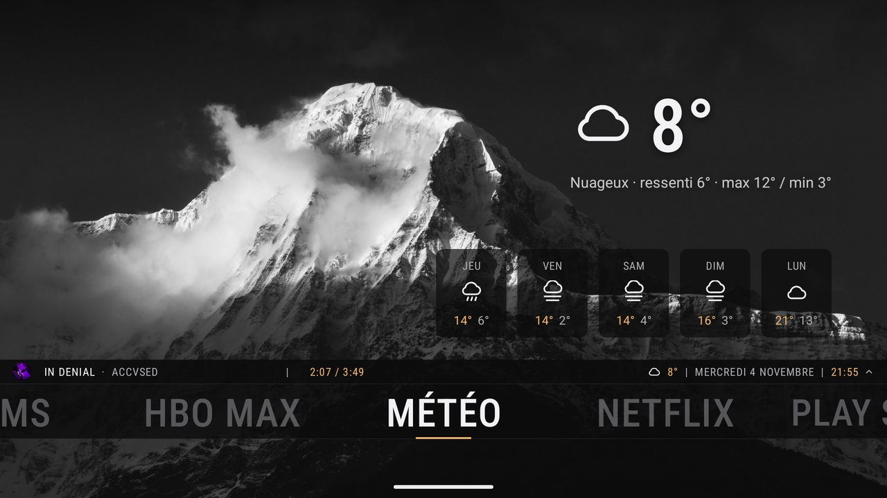
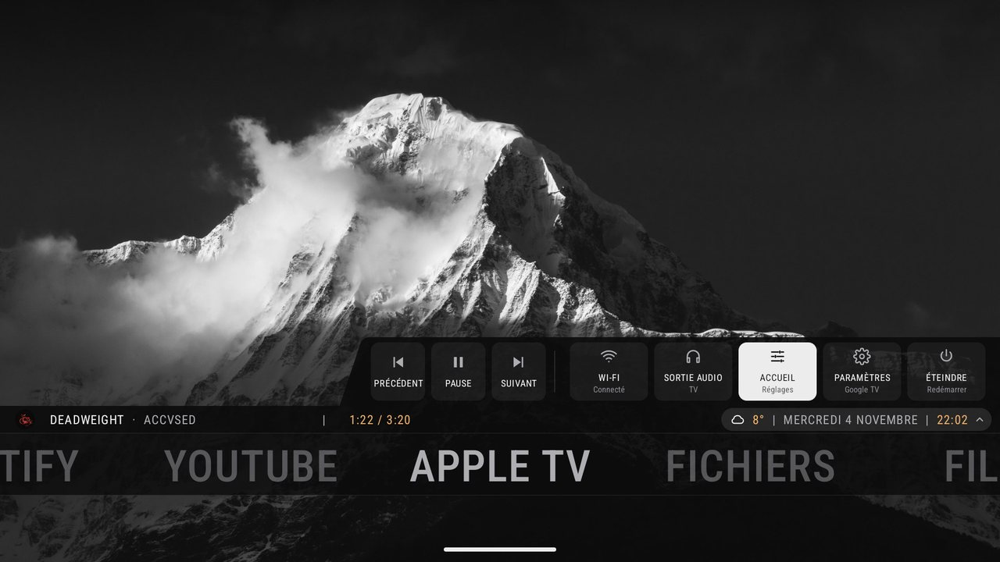
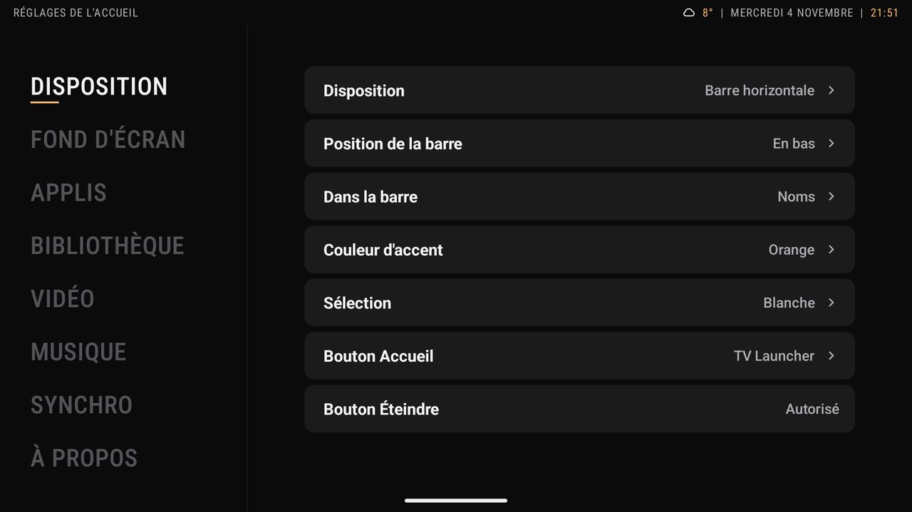
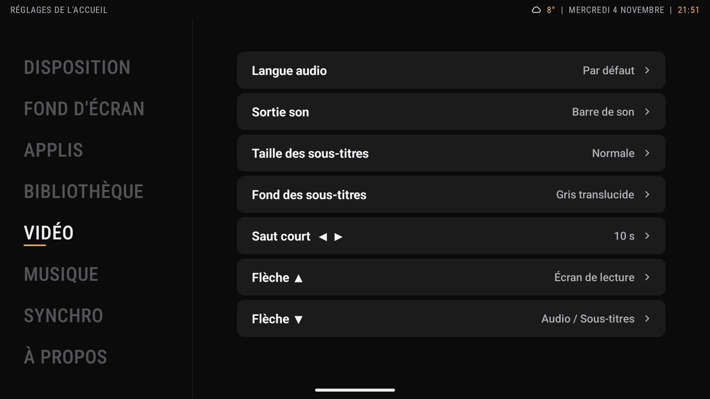
Un écran d'accueil simple pour Google TV : vos applis, l'heure, la météo et votre fond d'écran. Explorateur de fichiers, bibliothèque de films et séries et lecteur vidéo intégrés pour le NAS et les clés USB. Son style s'inspire du thème Aeon Nox: SiLVO de Kodi. A simple home screen for Google TV: your apps, the time, the weather and your wallpaper. A file explorer, a film and series library and a video player are built in, for your NAS and USB drives. Its look is inspired by Kodi's Aeon Nox: SiLVO theme.
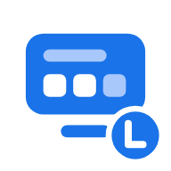
Un accueil Google TV simple, sans publicité et sans connexion à Internet : vos applis, l'heure et le fond d'écran de votre choix. Rien d'autre. A simple Google TV home screen, without ads and without any internet connection: your apps, the time and the wallpaper of your choice. Nothing else.
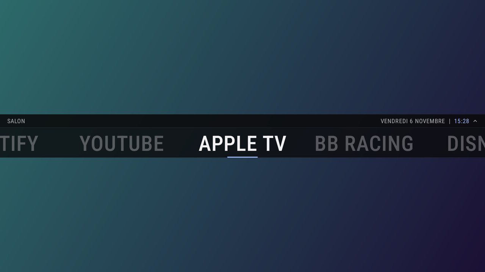
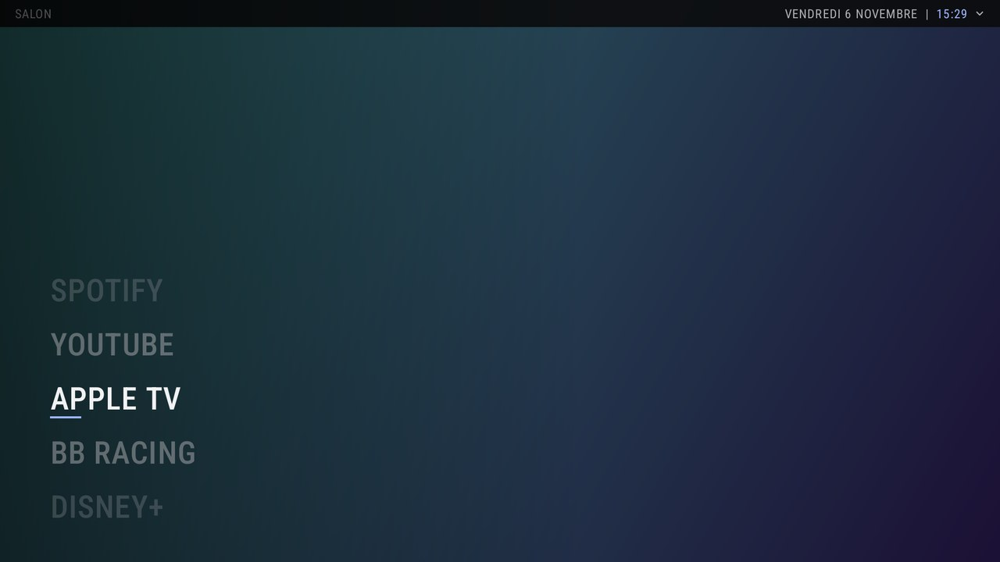
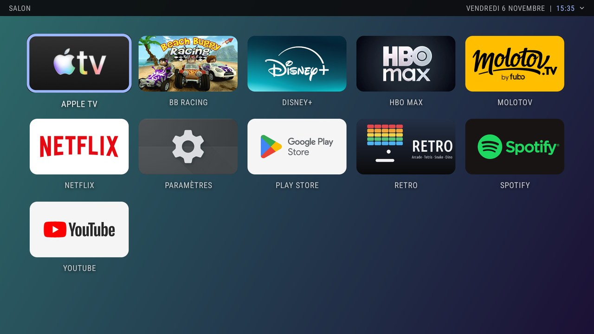
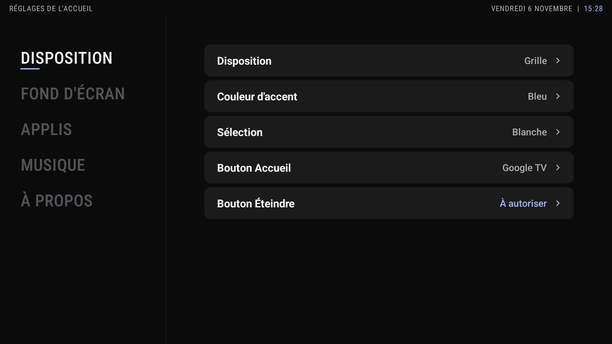
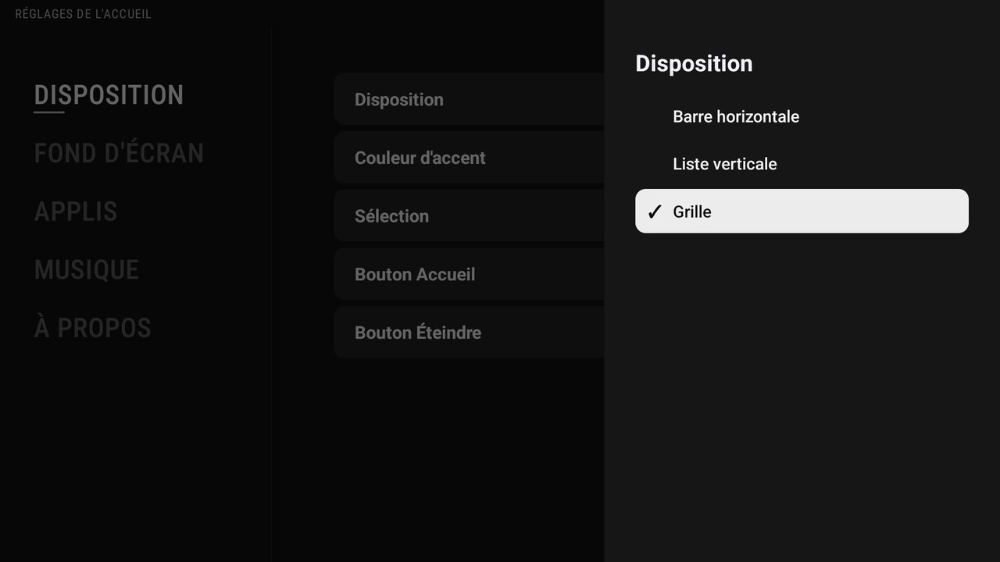
TV Launcher Lite reprend l'accueil de TV Launcher et rien d'autre : pas de bibliothèque de films, pas de lecteur, pas de réseau, pas de météo. Il n'a même pas l'autorisation d'accéder à Internet. Ses réglages sont gardés sur la TV, en français ou en anglais selon la langue du système. TV Launcher Lite keeps the TV Launcher home screen and nothing else: no film library, no player, no network, no weather. It does not even have permission to access the internet. Its settings are kept on the TV, in French or English depending on the system language.
TV Launcher fait tout : accueil, films et séries, fichiers, lecteur. TV Launcher Lite ne garde que l'accueil, sans aucune connexion à Internet. Les deux peuvent être installés sur la même TV. TV Launcher does it all: home screen, films and series, files, player. TV Launcher Lite keeps only the home screen, with no internet connection at all. Both can be installed on the same TV.
| TV Launcher | TV Launcher Lite | |
|---|---|---|
| Applis en barre, liste ou grilleApps as bar, list or grid | OuiYes | OuiYes |
| Fond d'écran : photo, dégradé, couleur unieWallpaper: photo, gradient, solid colour | OuiYes | OuiYes |
| Musique en cours, date et heureNow playing, date and time | OuiYes | OuiYes |
| Télécommande, clavier ou manetteRemote, keyboard or gamepad | OuiYes | OuiYes |
| Bouton Accueil et menu ÉteindreHome button and power menu | OuiYes | OuiYes |
| Météo et prévisions sur cinq joursWeather and five-day forecast | OuiYes | NonNo |
| Bibliothèque de films et séries, fiches NFOFilm and series library, NFO files | OuiYes | NonNo |
| Lecteur vidéo intégré (moteur VLC)Built-in video player (VLC engine) | OuiYes | NonNo |
| Explorateur de fichiers (NAS, clé USB)File explorer (NAS, USB drive) | OuiYes | NonNo |
| Réglages synchronisés entre plusieurs TVSettings synced between several TVs | OuiYes | NonNo |
| Copilote TVMate sur téléphoneTVMate phone copilot | OuiYes | NonNo |
| Accès à InternetInternet access | Oui : météo, images, mises à jourYes: weather, images, updates | AucunNone |
| Taille de l'appliApp size | 51 Mo51 MB | 2 Mo2 MB |
| Mémoire utilisée*Memory used* | environ 130 Moabout 130 MB | 45 Mo85 Mo au maximum, avec une photo en fond45 MB85 MB at most, with a photo wallpaper |
| LanguesLanguages | Français (anglais bientôt)French (English soon) | Français et anglaisFrench and English |
* Mesuré sur un Chromecast avec Google TV HD, un fond d'écran affiché : à titre indicatif. À titre de comparaison, l'accueil Google TV d'origine occupe environ 170 Mo, services compris.* Measured on a Chromecast with Google TV HD with a wallpaper shown: indicative only. For comparison, the original Google TV home screen uses about 170 MB, services included.
Depuis votre téléphone, choisissez les pochettes, les fanarts et les fiches de vos films et séries, et réglez TV Launcher à distance. From your phone, pick the posters, fanart and info files of your films and series, and set up TV Launcher remotely.
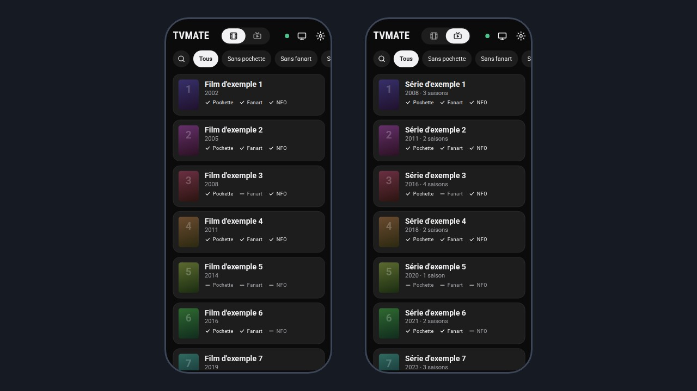
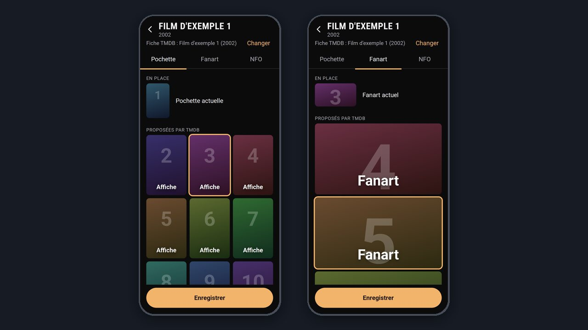
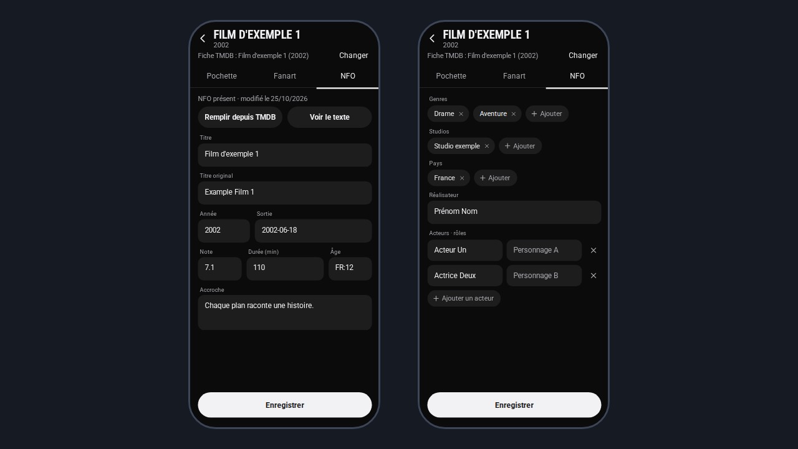
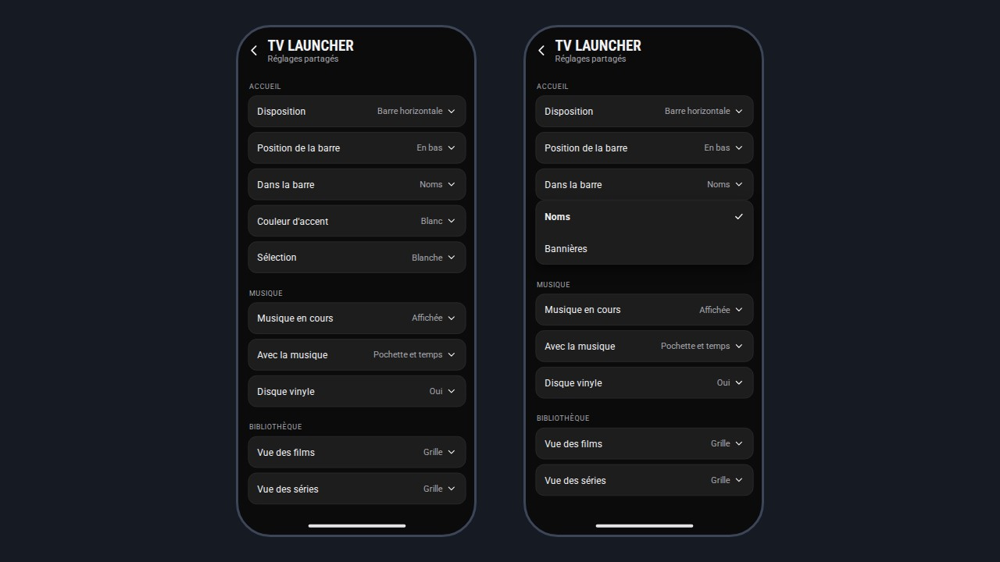
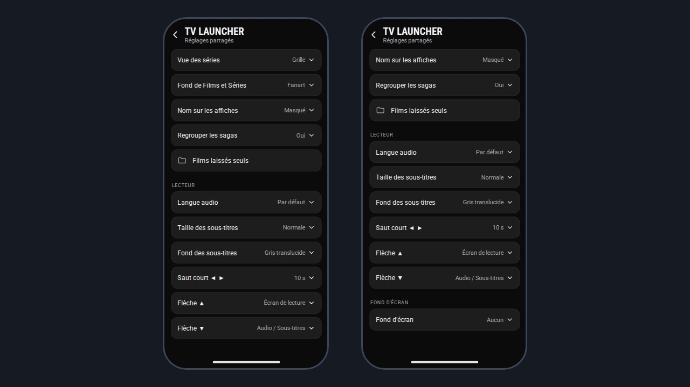
TVMate se connecte au partage réseau où sont vos films et vos séries, le même que celui de TV Launcher. Elle montre ce qui manque à chaque titre (pochette, fanart, fiche NFO), propose les images et la fiche de TMDB, et remplace les fichiers sur le partage après votre confirmation. Elle sert aussi de télécommande de réglages : tout ce que TV Launcher partage entre vos TV se change depuis le téléphone, même quand la TV est éteinte. TVMate connects to the network share where your films and series are, the same one TV Launcher uses. It shows what each title is missing (poster, fanart, NFO file), suggests images and the info file from TMDB, and replaces the files on the share once you confirm. It is also a remote control for settings: everything TV Launcher shares between your TVs can be changed from the phone, even when the TV is off.
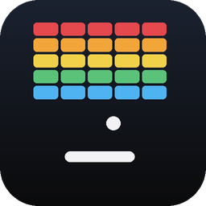
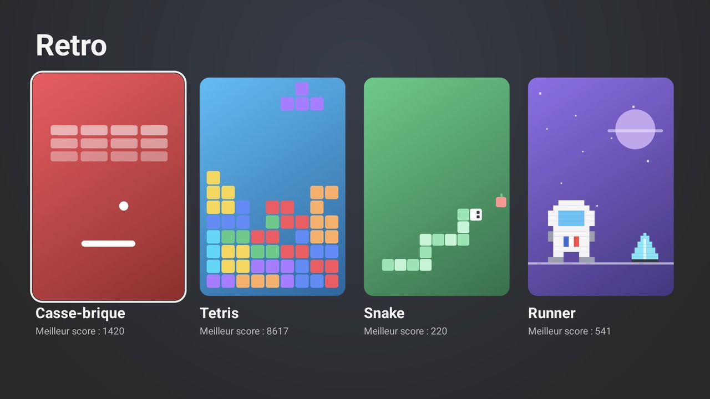
Quatre petits jeux à l'ancienne pour la TV : casse-brique avec bonus, Tetris, Snake et Runner. Ils se jouent à la télécommande ou à la manette, avec des sons discrets, un menu Pause et le meilleur score de chaque jeu. Four small retro games for the TV: breakout with power-ups, Tetris, Snake and Runner. Play with the remote or a game controller, with discreet sounds, a Pause menu and the best score of each game.
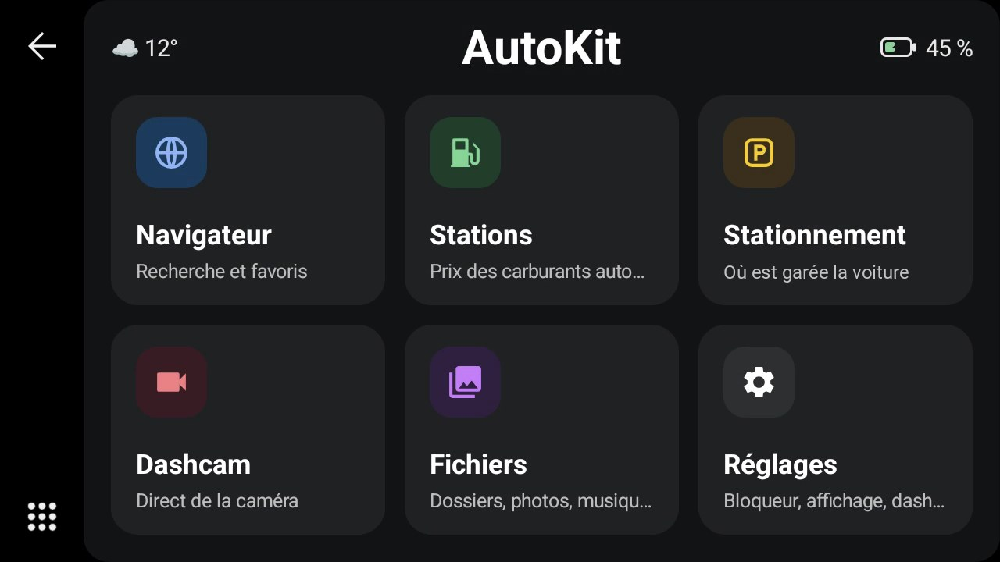
Un accueil à tuiles pour Android Auto, à l'arrêt : navigateur, stations, stationnement, dashcam et fichiers sur l'écran de la voiture. Dashcam testée avec une 70mai (A810) ; les autres modèles ne sont pas garantis. A tile home screen for Android Auto, while parked: browser, fuel stations, parking, dashcam and files on the car's screen. Dashcam tested with a 70mai (A810); other models are not guaranteed.
Les applis ne passent pas par le Play Store : Android demande une autorisation la première fois. Une nouvelle version s'installe de la même façon, par-dessus l'ancienne, sans rien perdre. The apps are not on the Play Store: Android asks for a permission the first time. A new version installs the same way, over the old one, without losing anything.
Google TV ou Chromecast avec Google TV. Un PC est nécessaire une seule fois pour en faire l'accueil.Google TV or Chromecast with Google TV. A PC is needed once, to make it your home screen.
adb shell pm disable-user --user 0 com.google.android.apps.tv.launcherx adb shell pm disable-user --user 0 com.google.android.tungsten.setupwraith
adb shell pm enable com.google.android.apps.tv.launcherx adb shell pm enable com.google.android.tungsten.setupwraith
Google TV ou Chromecast avec Google TV. Aucun PC nécessaire pour l'essayer ; un PC est utile une seule fois pour en faire l'accueil.Google TV or Chromecast with Google TV. No PC needed to try it; a PC helps once, to make it your home screen.
adb shell pm disable-user --user 0 com.google.android.apps.tv.launcherx adb shell pm disable-user --user 0 com.google.android.tungsten.setupwraith
adb shell pm enable com.google.android.apps.tv.launcherx adb shell pm enable com.google.android.tungsten.setupwraith
Téléphone Android 8 ou plus, sur le même réseau que le partage où sont vos films et séries. TV Launcher n'est pas nécessaire pour l'utiliser, mais c'est lui qui affiche les images et les fiches.Android 8 or later phone, on the same network as the share where your films and series are. TV Launcher is not required to use it, but it is what shows the images and info files.
Google TV, Chromecast avec Google TV ou tablette Android. Aucun PC nécessaire.Google TV, Chromecast with Google TV or an Android tablet. No PC needed.
Téléphone Android 15 ou plus, avec Android Auto.Android 15 or later phone, with Android Auto.